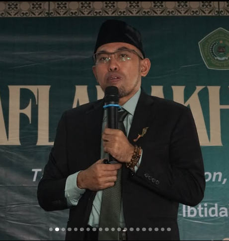

Kurikulum Merdeka
Pembelajaran fleksibel dan berpusat pada siswa.
Kami berkomitmen menghadirkan pendidikan berkualitas yang tidak hanya fokus pada prestasi akademik, tetapi juga membentuk karakter dan keterampilan hidup.
Pembelajaran fleksibel dan berpusat pada siswa.
Didukung tenaga pendidik berpengalaman.
Mengembangkan bakat dan minat siswa.
Lingkungan belajar yang nyaman dan lengkap.

“Pendidikan adalah investasi terbaik untuk masa depan. Kami percaya setiap siswa memiliki potensi luar biasa yang perlu didukung, dibimbing, dan dikembangkan.”
Landasan kami dalam mendampingi setiap siswa untuk tumbuh dan meraih masa depan.
Menjadi sekolah unggulan yang mencetak generasi berilmu, berkarakter, dan berdaya saing.
Menghadirkan pembelajaran berkualitas yang mendorong rasa ingin tahu dan semangat belajar.
Membiasakan sikap santun, tanggung jawab, disiplin, dan kepedulian dalam keseharian.
Mendukung bakat, kreativitas, dan kepercayaan diri setiap siswa melalui pengalaman belajar.
Menggunakan pendekatan aktif dan teknologi untuk menyiapkan siswa menghadapi masa depan.
Eksplorasi sains, teknologi, dan eksperimen melalui praktik.
Melatih kemampuan bahasa, presentasi, dan public speaking.
Membentuk siswa yang bertanggung jawab dan percaya diri.
Memanfaatkan teknologi untuk pengalaman belajar yang relevan.
Kenali lingkungan belajar, kegiatan, dan nilai-nilai yang menjadi bagian dari kehidupan di MI PKM Jaya Unpam.
Temukan lingkungan belajar yang mendukung potensi, karakter, dan masa depan putra-putri Anda.